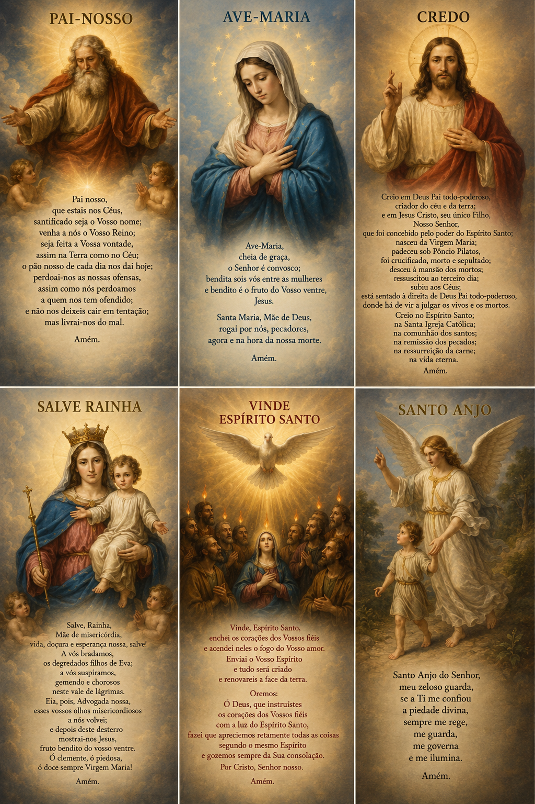

Desde o início do Cristianismo, as orações são práticas comuns dos fiéis, e isso vem até
mesmo antes da própria Encarnação do Verbo (). A Igreja, desde os primeiros séculos, convida
os cristãos a rezarem uns pelos outros, além de já crerem na comunhão dos santos.
OBS: A comunhão dos Santos engloba também o purgatório.

Aqui também faz parte da liturgia. Sendo assim, também pode ter a junção de itens litúrgicos, como a Música e a Oração, como na oração da Alma de Cristo: